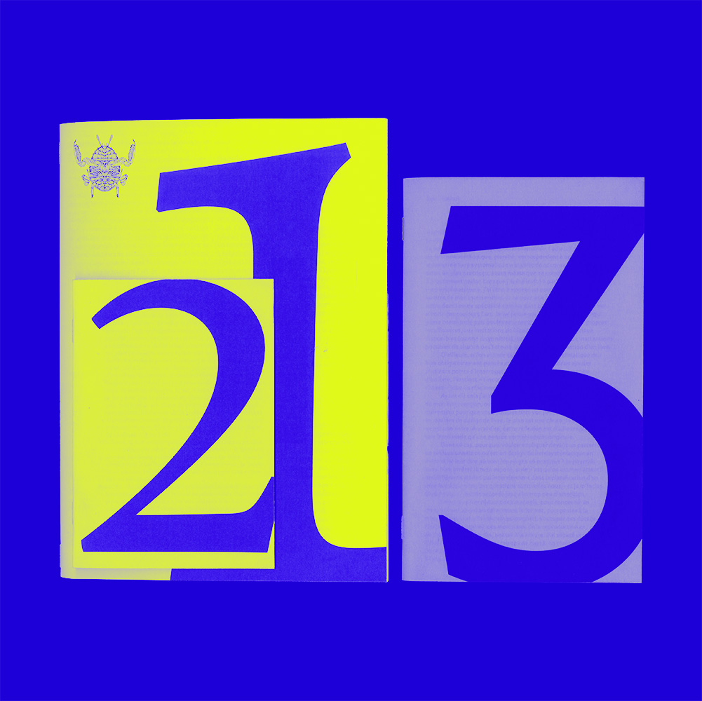
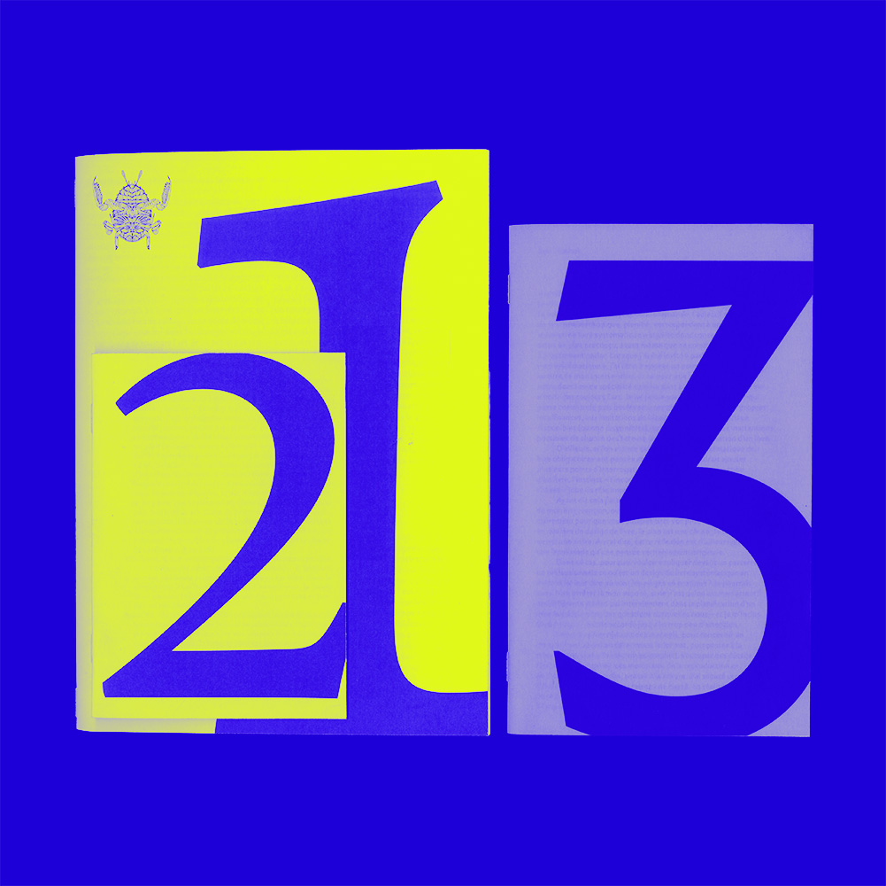

LUCAS DELRŒUX * LUCAS DELRŒUX * LUCAS DELRŒUX * LUCAS DELRŒUX * LUCAS DELRŒUX *


 INK MADNESS
INK MADNESS
 ITINÉRAIRE GRAPHIQUE
ITINÉRAIRE GRAPHIQUE
 COFFRET JEAN-PIERRE RAYNAUD
COFFRET JEAN-PIERRE RAYNAUD
 GRAVURES ANIMALIÈRES
GRAVURES ANIMALIÈRES
 SPÉCIMEN TYPOGRAPHIQUE
SPÉCIMEN TYPOGRAPHIQUE
 PIGNON FIXE
PIGNON FIXE
 AFFICHES

COMPOSITION DE TEXTE
AFFICHES

COMPOSITION DE TEXTE

À propos
Je m'appelle Lucas Delrœux, j'ai 20 ans et j'étudie le Design Graphique depuis 2020.
Ce portfolio comprend des projets que j'ai menés dans le cadre de ma formation et des projets que j'ai réalisés de manière plus personnelle.
Ma démarche consiste en la recherche et la création de supports visuels illustrés, pour cela j’ai l’habitude de travailler différents médiums, je maîtrise aussi bien des méthodes traditionnelles que les logiciels de création et de mise en page, notamment ceux de la suite Adobe.
Mon intérêt pour le monde du vivant me pousse à relier mes compétences en graphisme à mes études et recherches sur les animaux. J’ai notamment un projet éditorial en cours de réalisation porté sur l’identification et la classification des crabes du Finistère.
J'ai eu l'opportunité de faire de nombreux stages dans le domaine de l'édition et de l'imprimerie. Cela m'a beaucoup enrichi, et je m'appuie sur cette expérience pour mener à bien des projets cohérents tout en conservant une approche singulière.
Je suis sans cesse à la recherche de nouvelles expériences pour améliorer mes compétences et mener à bien des projets toujours plus consistants et aboutis.